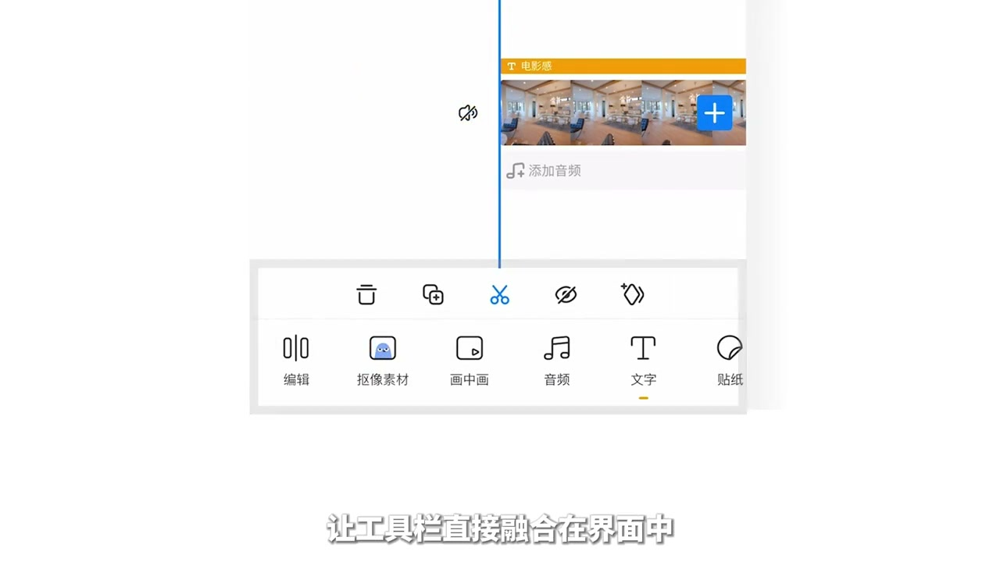
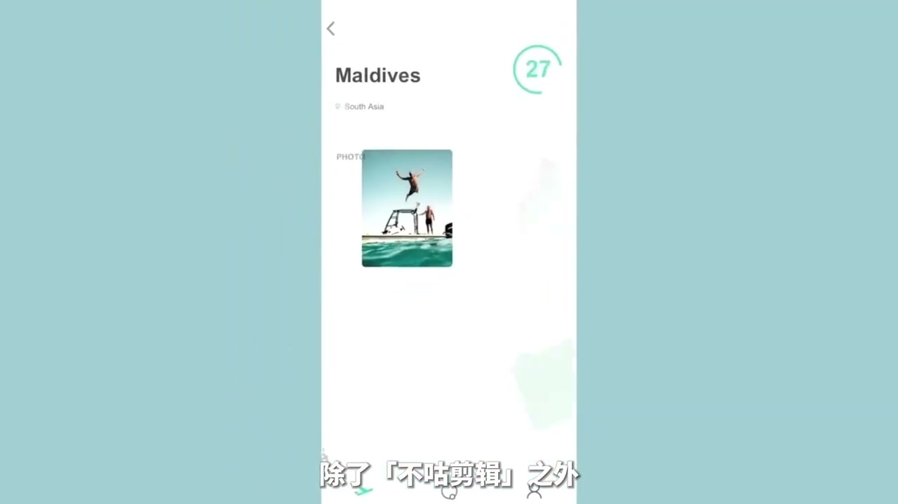

内容要点
[00:00] Hi 朋友们
[00:01] 您有没有过这样的困扰
[00:02] 当我们拿着新版的相机
[00:04] 幸运地拍摄了一些非常不错的视频和照片
[00:06] 然后马不停提的把他们检测了一条超级满意的Vlog之后
[00:10] 我们终于来到了最后一步
[00:11] 尤其是给这些画面加上一些文字
[00:13] 然后再给照片排一下板
[00:18] 怎么有点土啊
[00:20] 到底字应该放在画面的哪里
[00:21] 应该有什么字体
[00:23] 白色看起来比较简洁
[00:24] 但是看不清楚
[00:25] 换成其他颜色的话
[00:26] 哇 直接灾难
[00:27] 是不是应该加点阴影往前冰框
[00:30] 呃 弄弄弄的
[00:31] 简直可以直接发在相机上
[00:32] 还一家人厉害的朋友
[00:36] 我也给你们有同样的困扰
[00:38] 往往因为视频排板和文字设计
[00:40] 让自己的视频没有别人那么有质感
[00:42] 这个时候就不得不搬出我们自学做视频的第一要意了
[00:46] 多多多
[00:48] 对 虽然我没有办法系统地告诉你们该怎么改善
[00:51] 但是我看得多呀
[00:52] 所以这期视频
[00:53] 我想分享给大家三种能够提升排版思路
[00:56] 顺便还能提升配色审美和视频灵感的渠道
[00:58] 保证看到就能马上拥挡
[01:05] 说到文字排版
[01:06] 不知道大家有没有看过排版之歌
[01:08] 就是超洗脑的这个
[01:18] 那非常有意思
[01:20] 用1分20秒就讲清楚了基础的文字排版
[01:22] 其实这道视频出自日本的设计类节目
[01:26] 这个节目真的超级保障
[01:27] 不仅会让文字排版
[01:28] 还用各种有趣的方式展现了各种生活物品的设计原理
[01:32] 我超级喜欢里面有各种生活常见物品做的定格动画
[01:35] 这就可以获得很多灵感
[01:37] 因为是面向儿童的节目
[01:38] 里面的知识都展现得非常直观
[01:40] 也很浅浅易懂
[01:41] 推荐给大家
[01:43] 另一部想要推荐的文字排版相关的影片是记录片
[01:46] graphic memes
[01:48] 大家在b站搜索平面之道就可以找到它
[01:51] 这部记录片讲的是数字时代之前的
[01:53] 平面设计制作的演变史
[01:55] 如果你喜欢复古风格的排版和设计效果
[01:57] 这部记录片里面觉得有大量可以启发灵感的画面和配色
[02:01] 光是这个片头
[02:02] 我就反复看了十几遍
[02:06] 第二种想推荐给大家的排版学习渠道
[02:08] 其实我们每天都在浏览
[02:10] 就是手机app的UI
[02:12] UI设计往往是用最简洁的方法去匹配用户的视觉逻辑
[02:16] 我觉得有些设计细节完全是可以跟视频排版相通的
[02:19] 我平常也会尝试用我不专业的眼光
[02:21] 去观察这些app使出的通过升级UI来改变视觉风格的
[02:24] 翻了翻手机
[02:25] 发现我经常用的简洁app估估剪辑
[02:27] 最近正好更新UI
[02:29] 一些小细节还是很简单好学的
[02:31] 比如在给视频预览区和操作区域进行分区时
[02:34] 不顾采用了给预览区加浅灰色底的方法
[02:38] 浅灰色本身建议整体白色的击掉
[02:40] 这样进行分割区块也不会让画面太乱
[02:43] 如果我们想要做一些简洁风格的画面排版
[02:45] 在区块分割上也可以用相近的颜色
[02:48] 让整体观感更简洁一体
[02:50] 另外我还注意到
[02:51] 更新后的界面取消了快捷工具栏的快撞浮层
[02:54] 让工具栏直接融合在界面中
[02:56] 这其实是减少了页面中过多的形状
[02:59] 让页面不会被太多区块分割
[03:01] 也带到了简洁的观感
[03:03] 然后我还发现他们的新UI更加注重软件的IP形象了
[03:06] 这次不断变装的格子在软件开屏
[03:08] 和各级采用的推荐功能图标上都会出现
[03:11] 在等待选案的过程中也会跳出来变装给我看
[03:14] 非常有趣
[03:15] 有一种软件在陪我一起剪辑的感觉
[03:17] 把识别度高的IP形象
[03:19] 植入在简洁的操作界面里
[03:21] 我觉得很好的平衡了软件的专业性
[03:23] 和典型用户群体的幽默感和创意的需求
[03:26] 理想界面更有辨识度
[03:28] 是一种很妙的设计语言
[03:30] 除了不顾剪辑之外
[03:32] 在我手机里个人比较喜欢的UI设计
[03:34] 还有偏厂、Point等等
[03:36] 就不一一列举了
[03:37] 大家平时如果看到喜欢的AppUI
[03:39] 可以在更新前把界面截图保存一下
[03:42] 尝试去分析一些设计细节
[03:44] 个人觉得不用怕自己不专业
[03:45] 分析的多了总能学到一点不是吗
[03:50] 如果你学习排版喜欢直接看图的话
[03:53] 那我必须给你推荐一本比较小众的实体杂志
[03:55] BRAND
[03:56] 看下他们的官网
[03:57] 才能感受到破面而来的审美气息呀
[03:59] 重点是
[04:00] 这个是比较少有的中文设计杂志
[04:02] 终于不用只看图了呀
[04:05] 作为设计类杂志
[04:06] BRAND本身的文字图片排版和配色都非常实用好学
[04:09] 相比于一些设计网站相比较零碎的信息
[04:12] BRAND每一期都会聚焦于一个专题
[04:14] 可以更系统的学习设计知识
[04:16] 而且网上还有电子扫描版
[04:18] 可以直接导致iPad里随时翻语
[04:20] 怎么样
[04:21] 是不是比看网站有那位多了
[04:25] 这就是本期视频
[04:26] 我想分享给大家的几种提高视频排版审美的渠道
[04:29] 之后我也会不定期更新一些这样的分享的视频
[04:32] 希望能给大家带来灵感
[04:34] 我是布鲁头
[04:35] 我们下次再见



